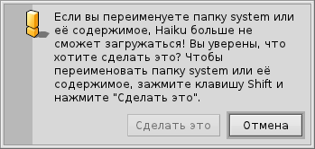

Русский
Русский Français
Français Deutsch
Deutsch Italiano
Italiano Español
Español Svenska
Svenska 日本語
日本語 Українська
Українська 中文 ［中文］
中文 ［中文］ Português
Português Suomi
Suomi Slovenčina
Slovenčina English
EnglishИерархия файловой системы
Иерархия файловой системы Haiku очень простая. По возможности используются понятные названия для файлов и папок для того, чтобы не вводить пользователя в замешательство. Важные для системы файлы и папки защищены от случайного изменения, предупреждая следующим образом:
Второе предупреждение появляется в случае, если Вы попытаетесь удалить или переименовать что-нибудь в иерархии системы. Для того чтобы активировать кнопку "" нужно удерживать клавишу SHIFT.
В основном выделяют три направления корневой папки загрузочного раздела:
| /boot/system/ | принадлежит системе. Не стоит её трогать! | |
| /boot/common/ | содержит общие файлы для всех пользователей. | |
| /boot/home/ | это Ваша персональная папка для хранения Ваших данных и настроек. |
 Системная папка - /boot/system/
Системная папка - /boot/system/
У BeOS, предшественника Haiku, эта папка находилась по следующему адресу /boot/beos/. Вы всё ещё можете её найти в старых документациях (например, в оригинальной BeBook).
Неважно как она называется, главное ничего не изменять внутри неё. Каждое обновление в Haiku может добавить, удалить или перезаписать что-либо, находящееся в ней. Если вы хотите расширить функциональность при помощи дополнений для файлового менеджера Tracker или трансляторов, либо драйвера для устройства, вы должны устанавливать их в свою папку /boot/home/. Однако если они предназначены для всех пользователей, то они должны быть установлены в /boot/common/. Пока Haiku не поддерживает многопользовательский режим, это различие не имеет очевидного эффекта: в данный момент существует один пользователь с единственной домашней (home) папкой. Однако когда появится поддержка многопользовательского режима, это будет иметь значение, так что стоит с самого начала выбрать правильный путь.
Давайте представим, что вы хотите установить новый транслятор для нового формата изображения. Тогда вы не должны копировать его в соответствующую системную папку. Запомните: Не трогать!
Вместо этого вы должны скопировать его в аналогичную по назначению папку, находящуюся по адресу /boot/common/ или /boot/home/config/.
В нашем примере расположение трансляторов в системной папке будет
/boot/system/add-ons/Translators/
Аналогичная пользовательская папка находится по адресу
/boot/home/config/add-ons/Translators/
либо
/boot/common/add-ons/Translators/
Это дает ещё один положительный момент: Если компонент, который вы установили, работает некорректно (например, драйвер), вы можете выбрать "Запретить загрузку пользовательских дополнений (Disable User Add-Ons)" в меню загрузчика и тогда вы всегда сможете загрузиться без проблемного компонента..
В основном вы не будете иметь дело с подобными вещами, т.к. каждое программное обеспечение, поставляемое из надежного источника, должно уметь делать эти вещи автоматически.
Общая папка - /boot/common/
В настоящее время Haiku не является многопользовательской системой. Когда она станет таковой, каждый пользователь будет иметь свою домашнюю папку, которая будет недоступна кому-либо ещё. Каждое приложение или дополнительный компонент (дополнение для файлового менедждера, трансляторы и т.д.), либо другие данные, которые предполагают использование всеми пользователями, должны находиться по адресу /boot/common/
Домашняя папка - /boot/home/
Эта папка принадлежит вам. Здесь вы можете создавать и удалять файлы и папки по своему желанию. Тем не менее не стоит засорять папку ~/config/ и все папки, находящиеся в ней. Вы можете, например, удалить папку ~/config/settings/ без ущерба для системы, но кто захочет потерять все свои настройки? В любом случае, система предупредит вас, как показано в примере выше.
Кроме того, папка ~/config/add-ons/, как и системная, предназначена для дополнительных компонентов. (Кстати, знак тильда ("~") это ссылка на Вашу домашнюю папку, так что Вам не придется каждый раз писать "/boot/home/" в терминале.)
| По умолчанию здесь хранится ваша почта. | ||
| ~/queries | В этой папке хранятся запросы в течении 7-ми дней. | |
| ~/config/be/ | Папка be, содержит все что показывается в в меню панели задач Deskbar. Вы можете добавлять или удалять элементы при помощи панели конфигурации или просто путем копирования файлов, папок или ссылок непосредственно в эту папку. | |
| ~/config/bin/ | Дополняет системную папку /boot/system/bin/ и хранит все ваши приложения для командной строки (терминала). | |
| ~/config/boot/ | Эта папка для хранения сценариев пользователя, которые выполняются до или после загрузки/выключения системы. | |
| ~/config/boot/launch/ | Создайте ссылку на приложение или документ в этой папке, и при каждой загрузке они будут запускаться. | |
| ~/config/data/fonts/ | Просто скопируйте TrueType или Postscript шрифт в эту папку и вы сможете ими мгновенно воспользоваться. | |
| ~/config/settings/ | Эта папка содержит настройки для всех приложений и некоторые настройки системы. Некоторые приложения хранят свои настройки в собственных папках, другие просто хранят конфигурационные файлы прямо здесь. | |
| ~/config/settings/beos_mime/ | В этой MIME -базе данных Haiku отслеживает все типы файлов и их настройки (примечание: MIME - Multipurpose Internet Mail Extension — многоцелевые расширения интернет-почты, произносится как «майм»). | |
| ~/config/settings/kernel/drivers/ | Здесь располагается один из файлов с настройками, которые могут быть интересны: файл kernel предлагает некоторые низкоуровневые настройки, например, отключение SMP, активация APM. Вы можете активировать настройки путем удаления символа комментария "#". Будьте осторожны! | |
| ~/config/settings/Tracker/ | Здесь располагаются несколько интересных папок: | |
| DefaultFolderTemplate/ | Показывает и упорядочивает все атрибуты и размеры окна по вашему вкусу. Каждая новая папка, которую вы создадите, будет использовать этот шаблон. | |
| DefaultQueryTemplates/ | Вы можете определить формат окна результатов поиска для определенных типов файлов. Для более подробного изучения следует обратиться к теме запросы: Окно результатов поиска.. | |
| Go/ | Поместите сюда ссылки на ваши избранные папки, и вы их увидите в диалогах открытия и сохранения. Для более подробного изучения следует обратиться к теме графический интерфейс Haiku: Избранные и недавно открытые папки. | |
| Tracker New Template/ | Добавьте шаблон для любого типа файла, который впоследствии будет доступен в меню файлового менеджера menu. Для более подробного изучения следует обратиться к теме Tracker - Файловый менеджер: Работа с файлами. |